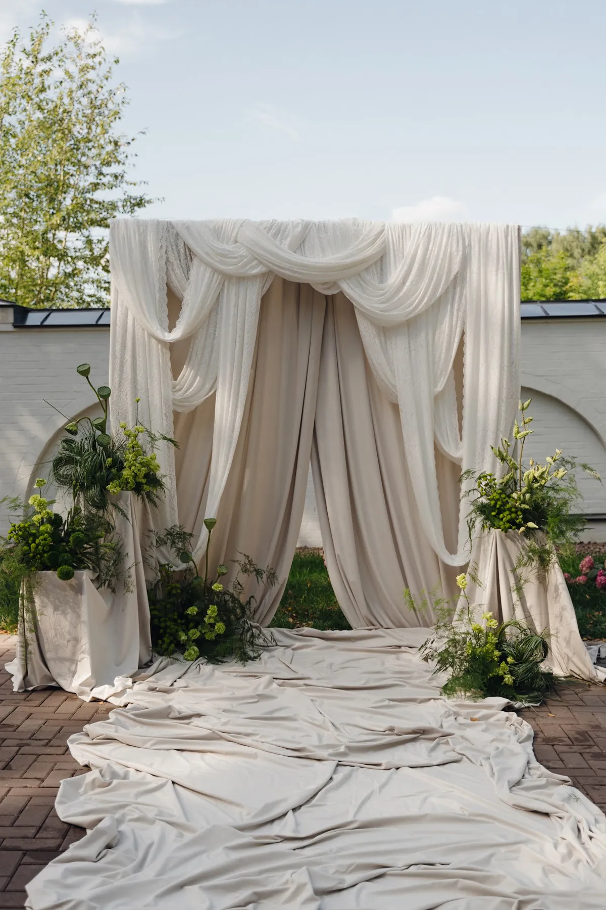
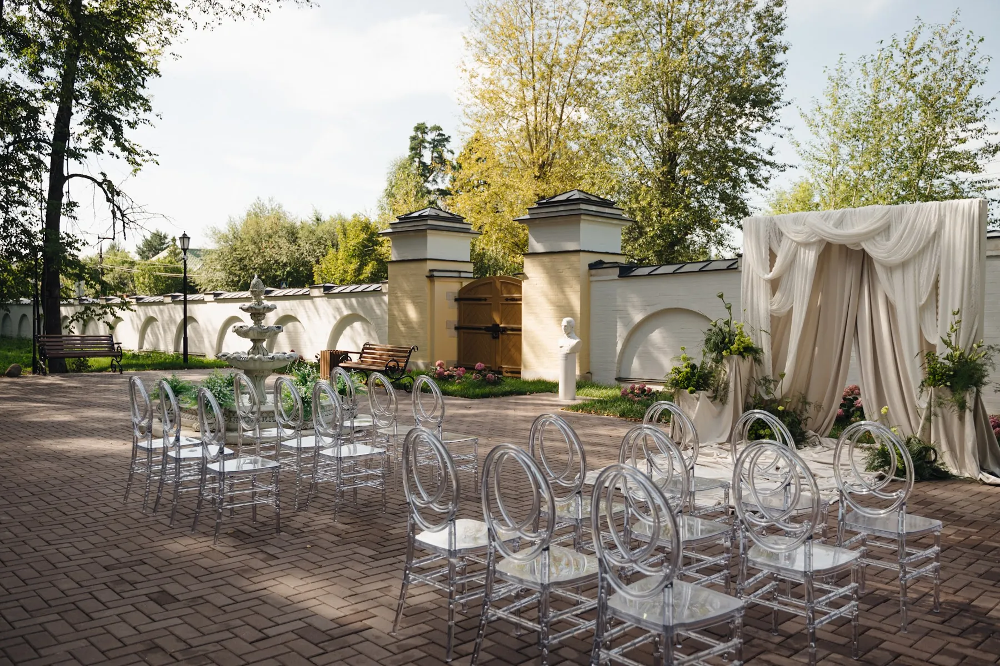
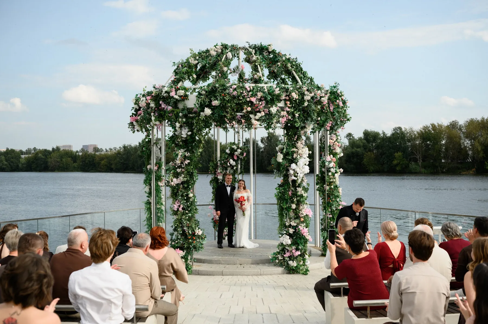

Выездная регистрация — это не только арка. Это целая сцена: место для пары, проход, места для гостей, стол для церемонии и план на случай непогоды. Собрали чек-лист, что входит в оформление и о чём стоит договориться заранее, — с примерами наших церемоний.
Что входит в оформление
- Арка или фон. Главный визуальный объект церемонии. Формы и материалы — в статье про свадебную арку.
- Проход. Тканевая дорожка, лепестки или просто аккуратно подготовленный путь к арке.
- Места для гостей. Стулья или скамейки, ряды, табличка для близких. Прозрачные стулья смотрятся легко и не загораживают вид.
- Цветочные композиции по сторонам. Напольные композиции у арки и у рядов.
- Стол регистратора. Небольшой стол с тканью и цветами для церемонии и подписей.
- Табличка или навигация. Указатели, программа, рассадка гостей — по желанию.


Где ставить церемонию
Выбирайте точку, которая красиво смотрится в кадре без лишних украшений: вода, деревья, красивый фасад. Чем больше вокруг пространства, тем крупнее и плотнее нужна конструкция — у воды арка выглядит выше и мощнее, в саду хватит лёгкой рамки. Ещё два условия:
- Солнце. Если церемония днём, расположите арку так, чтобы свет не бил в глаза паре и гостям.
- Ветер. Лёгкую ткань фиксируют, конструкцию утяжеляют и крепят.

План на случай непогоды
Выездная церемония всегда зависит от погоды, поэтому запасное место договариваются заранее: площадка под крышей, веранда, шатёр. Заранее решите:
- где будет запасная церемония;
- до какого часа принимается решение о переносе;
- кто и сколько времени переносит арку и цветы.
В жару продумайте тень и воду для гостей, в прохладу — пледы.
Монтаж и после церемонии
Арку и композиции собирают за несколько часов до церемонии, цветы ставят как можно ближе к началу — им нужна вода и тень. Площадке нужно выделить время на монтаж. После церемонии арку часто переносят в зал: она становится фоном для президиума или фотозоной. Тогда одна конструкция работает весь вечер. Подробнее — в статье про оформление президиума.
Совет: сделайте фото площадки в разное время суток и пришлите декоратору — по свету и теням видно, как расставить арку.
Церемонии, которые мы оформляли
«Шёлк, пионы и свечи» — арка из шёлка и тканевый проход. «Шёлк и жемчуг в саду» — арка из драпировки с жемчугом на газоне. «Ротонда у воды» — ротонда в зелени на берегу. «Бордовое сердце у воды» — арка-объект на берегу.
Как заказать
Расскажите о площадке, дате и количестве гостей — предложим форму арки, расстановку и план Б, и посчитаем смету.
Частые вопросы
Когда лучше проводить выездную регистрацию — днём или вечером?
Днём светло и тепло, вечером красивый свет, но темнеет быстро. Выбирайте время, когда есть хороший свет и комфорт для гостей.
Нужен ли стол для регистратора?
Обычно да: на нём лежат документы и ручка. Его оформляют тканью и небольшой композицией в стилистике церемонии.
Сколько стульев ставить?
Столько, сколько гостей на церемонии. Количество зависит от списка приглашённых — уточните его до монтажа.